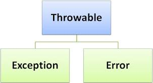
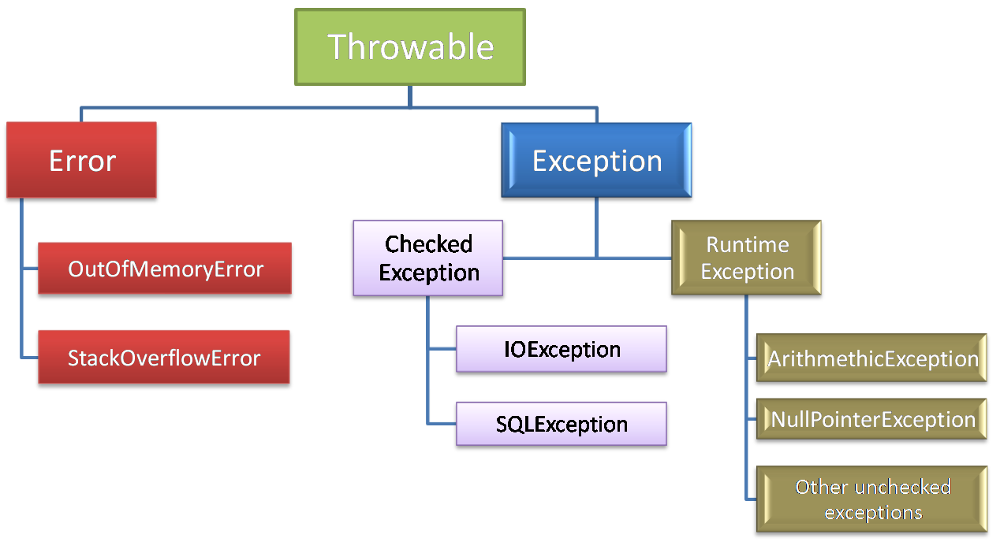

Exceptions
Como trabalhar com exceptions
Em JAVA

Rogério Fonteshttps://github.com/rogeriofontes
Atenção
Aperte 's' para ver as anotações dos slides
Este recurso só funciona se estiver acessando a apresentação através de um servidor web

Quem sou?
Rogério Fontes Tomaz
Apaixonado em maneiras e formas Ágeis de criar código fonte e bons produtos de
software. Sempre programando com um bom e forte café ao mesmo tempo escutando um belo e pesado
Rock`n Roll. Trabalho há mais de 10 Anos com JAVA e LINUX, passando por ANDROID, PYTHON, PHP,
ANGULAR, REACT E NODE.JS e outros. Sou professor Universitário e ministro as disciplinas: Redes de
Computadores; Arquitetura de Design de Sistemas com Java e Dispositivos Móveis. Jugleader e
Co-Fundador do UaiJUG (Grupo de Usuários do
Triângulo Mineiro) e Co-Fundador do Triangulo Hackerspace. Além disso, aventura-se como Empreendedor, é Lider de
Equipe e Arquiteto de Software na Everis de Uberlândia.
Mais sobre mim.
Link desse conteúdo!
Quem somos?

Grupo de usuários Java do Triângulo Mineiro
www.uaijug.com.brExceptions in Java
Uma exception na JVM é representada por uma instância da classe Throwable ou por uma de suas subclasses.
Hierarquias das exceptions em Java:
O que é uma exception?
Uma exception é um evento inesperado e excepcional, que ocorre durante a execução de um programa, ou seja, em tempo de execução. Essa exceção interrompe o fluxo normal das instruções do programa e ele é interrompido de forma inesperada, sendo que isso não é recomendado. O ideal é que a anomalia seja capturada e lançada de alguma forma para ser tratada, pelo desenvolvedor da aplicação.
Como ocorre uma exception?
Uma exceção pode ocorrer por vários motivos diferentes. Abaixo temos alguns:
- Um usuário inseriu dados inválidos na aplicação.
- Um arquivo que precisa ser aberto não pode ser encontrado.
- Uma conexão de rede foi perdida no meio das comunicações ou a JVM ficou sem memória.
- Algumas dessas exceções são causadas por erro do usuário, outras por erro do programador e outras por recursos físicos que falharam de alguma maneira.
Qual é a diferença entre Error e Exception?
Erro:
Indica que um problema sério na sua aplicação ocorreu e sempre bom não tentar capturá-lo
Exception:
Indica acorreu algo inesperado na sua aplicação e devemos sempre tentar capturar e trata-lo.
Temos 3 categorias em exceptions:
Checked exceptions
É uma exceção verificada, ou seja, ela é notificada pelo compilador no momento da compilação, elas são chamadas de exceções em tempo de compilação. Essas exceções não podem ser simplesmente ignoradas, o programador sempre deve tratar essas exceções.
Unchecked exceptions
Uma exceção não verificada é uma exceção que ocorre no momento da execução, elas são chamadas de exceções de tempo de execução. Isso inclui erros de programação, como erros de lógica ou uso inadequado de uma API. Exceções de tempo de execução são ignoradas no momento da compilação.
Errors
Não são exceções, são problemas que surgem fora do controle do usuário ou do programador. Os erros geralmente são ignorados no seu código porque você raramente pode fazer algo sobre um erro. Por exemplo, se ocorrer um estouro de pilha, ocorrerá um erro. Eles também são ignorados no momento da compilação.
Resumindo as Exceptions
Uma exceção é um erro em tempo de execução que interrompe o fluxo normal da execução do programa. A interrupção durante a execução do programa é referida como erro ou exceção.
Errors são classificados em duas categorias:
- Erros em tempo de compilação: Erros de sintaxe, erros semânticos
- Erros de Runtime: Exceptions
Um programa deve tratar todas as suas exceções, para continuar o fluxo normal da aplicação. Para isso Java, fornece um conjunto de métodos para usamos, chamada de Exception Handler. Uma Exception Handler é um conjunto de códigos que manipula uma exceção. Exceções podem ser tratadas em Java usando try & catch.
- No Try: colocamos o código normal para ser executada para aplicação
- No Catch: Se houver erro no código normal, ele entrará neste bloco
Vamos a exemplos:
Como é a Sintaxe do try/catch
try{
statement(s)
}
catch (exceptiontype name){
statement(s)
}
Um exemplo de try/catch
class CalculaDivisao {
public static void main(String args[]) {
int d = 10;
int n = 0;
try {
int resultado = n / d;
System.out.println("Calculo realizado: " + resultado);
} catch (ArithmeticException e) {
System.out.println("O calculo deu errado = " + e);
}
}
}
Como é a Sintaxe do try/catch/finally
try {
statement(s)
} catch (ExceptiontType name) {
statement(s)
} finally {
statement(s)
}
Um exemplo de try/catch/finally
class JavaException {
int d = 10;
int n = 0;
try {
int resultado = n / d;
System.out.println("Calculo realizado: " + resultado);
} catch (ArithmeticException e) {
System.out.println("O calculo deu errado = " + e);
}
finally{
System.out.println("Executa o essa bloco mesmo com erro");
}
}